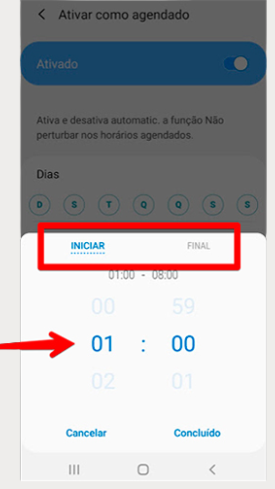

Configurar aparelho Android
- acesse o aplicativo mencionado para começarmos a falar sobre cada opção.
Configurando a conexão Wi-Fi
- Para se conectar a uma rede Wi-Fi, comece clicando no menu Conexões;

- Para ativar ou desativar o Wi-Fi, basta tocar no botão
- Caso queira acessar outra rede clique sobre o nome Wi-Fi, ao invés do botão
- Escolha qualquer uma das opções do menu
- insira a senha. Caso seja o Wi-Fi da sua casa, pode ativar o botão Reconexão automática
Configura — Sons
- Aqui é onde você pode trocar o toque e volume das chamadas no celular.
- Modo de som — você escolherá se o seu Android deverá tocar, vibrar ou ficar silencioso.
- Clique No botão abaixo " Toque".
- Escolha uma das opções do menu ou no sinal de “+” para escolher outra música do seu armazenamento.
CONFIGURAR AS NOTIFICAÇÕES
- acesse a opção Notificações no menu principal.

- A primeira opção que interessa nesse menu é o Não perturbar.
- Para evitar as notificações desde já, clique em Ativar agora. Se apenas quer agendar um horário no qual as notificações não aparecerão, clique em Ativar como agendado;
- Nessa tela escolha os dias da semana nos quais seu agendamento funcionará.

- Em seguida clique em Definir período para decidir qual o período que as notificações ficarão inativas.
- Se está preocupado em silenciar as notificações durante a madrugada e arriscar não receber ligações sobre alguma urgência, é possível configurar algumas exceções. No menu Não perturbar, clique em Permitir exceções.
- Se costuma usar o celular como despertador, assegure-se de que a opção Alarmes esteja marcada. Em seguida, clique em Chamadas de;

- Mude de Todos para Apenas contatos ou Apenas os contatos favoritos. Dessa maneira, evita receber ligações de números desconhecidos durante o período que configurou anteriormente.

- Veja se existe algum outro aplicativo que você quer que continue tocando mesmo quando o celular estiver no modo silencioso. Para isso, volte no menu Notificações, vá descendo com o dedo e toque em "Ver todos os aplicativos". Lá você escolhe os que podem ou não mandar alertas.
- Nessa tela desative o botão ao lado do nome do app para impedi-lo de te enviar notificações.
CONFIGURAR — VISOR
- os ajustes de visor e tela são bem simples, sem precisar que mude muita coisa.
- O primeiro item que faz bastante diferença na experiência é o brilho da tela. Na barra deslizante, você pode ajustar o nível de brilho do aparelho.
- Logo abaixo você pode deixar o próprio celular ajustar os níveis de brilho automaticamente. Ao ativar a função Brilho adaptável, o aparelho irá fazer esse ajuste de acordo com o nível de luz que incide no celular.

- Ativar o filtro de luz azul significa reduzir o esforço dos seus olhos ao encarar a tela, mas deixa as cores mais amareladas.
- Já o modo noturno como o nome diz, é ideal para usar a noite, reduzindo também a quantidade de iluminação jogada em seu rosto.
COMO COLOCAR PAPEIS DE PAREDE
- A opção seguinte dessa lista permite incluir temas e um papel de parede para a tela inicial.
- Em seguida você já pode navegar e escolher um papel de parede.
- se quiser colocar uma foto ou imagem de sua galeria, escolha a opção Galeria;
- Selecione se quer que o papel de parede seja colocado na Tela Inicial, Tela de bloqueio ou em ambas
CONFIGURAR – APPS
- retorne ao menu de configurações e deslize a tela para baixo até encontrar a opção Assistência do aparelho
- Você verá uma lista completa dos aplicativos em seu Android. Para desinstalar qualquer um deles, basta escolhê-lo nessa lista.
- Clique no botão Desinstalar;
- Caso um app importante esteja apresentando erros e não queira desinstalá-lo, clique em Forçar parada;;